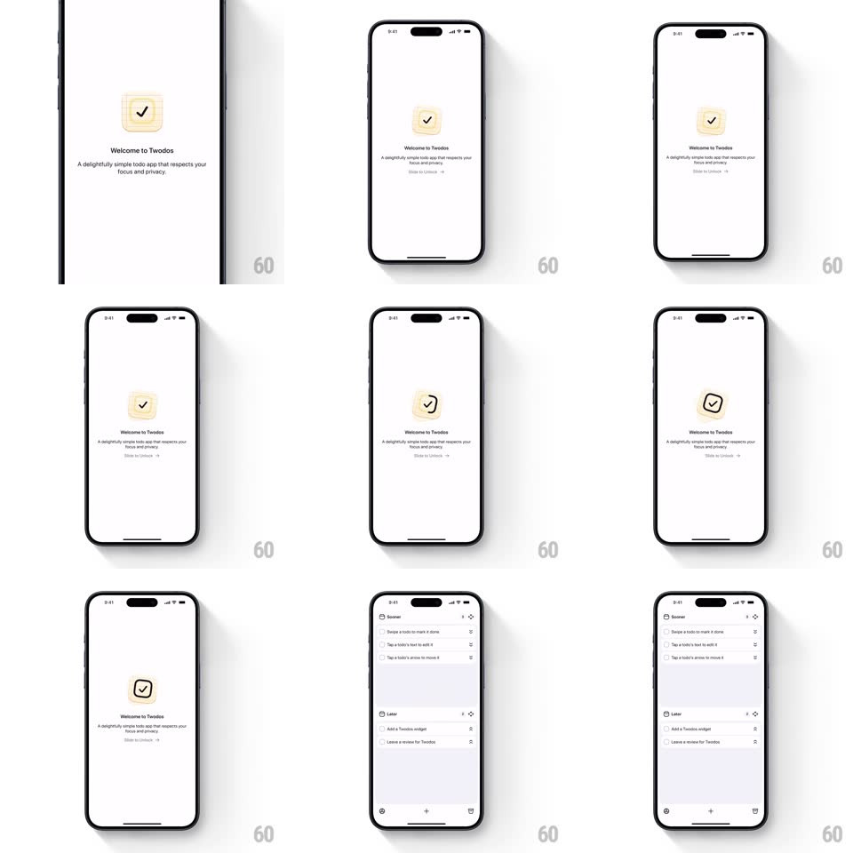

Media
Frame-by-frame

Rebuild this interaction 1:1: Twodos' slide-to-unlock - a hand-drawn check-in-a-box logo wiggles on the splash screen, "Slide to Unlock" invites a rightward drag, and the whole splash peels away into the Soon/Later todo list with organic wobble.

Rebuild this interaction 1:1: Twodos' slide-to-unlock - a hand-drawn check-in-a-box logo wiggles on the splash screen, "Slide to Unlock" invites a rightward drag, and the whole splash peels away into the Soon/Later todo list with organic wobble.
## Integration
Integration: stack-agnostic spec - springs given as stiffness/damping, timed motions as duration + curve; map every value to your framework and animation library of choice.
## Scene
Warm paper-white splash: a wobbly hand-drawn checkmark in a rounded square, "Welcome to Twodos" with a hand-set subtitle ("A delightfully simple todo app that respects your focus and privacy."), and a "Slide to Unlock ->" control. Behind it: the real list (Soon/Later sections with tutorial rows).
## Motion spec
Pattern: hand-drawn slide-to-unlock reveal.
- The logo idles with an organic wiggle (rotate +-2deg, scale 1 <-> 1.02, irregular ~1.4s loop - hand-drawn, not metronomic).
- Drag the unlock control right: it tracks 1:1 along its track, the label fading as it goes; past ~75% the splash commits.
- Commit: the splash slides away right with a paper-fling (400ms, ease-in) while the todo list underneath scales from 0.96 -> 1 and fades in, its rows staggering up 60ms apart.
- Below threshold: the control springs back with a playful double-bounce (spring ~220/12).
## Calibration
- Every line on the splash is slightly wobbly - borders, check, type; keep the imperfection consistent.
- The list behind is the REAL list, not a duplicate - the reveal exposes live UI.
## Reduced motion
Splash fades out; no wiggle.
## Don't miss
- The unlock track is also hand-drawn (uneven stroke, arrow sketched) - do not substitute a system slider.
- The wiggle resumes if the user abandons a drag mid-way - the splash stays alive.